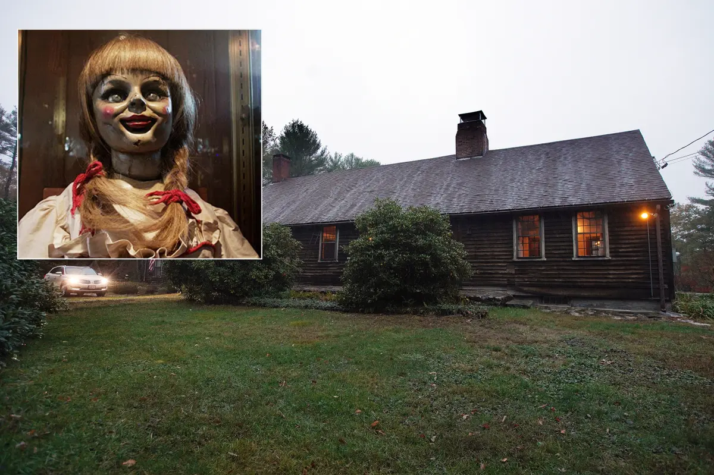
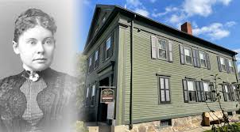
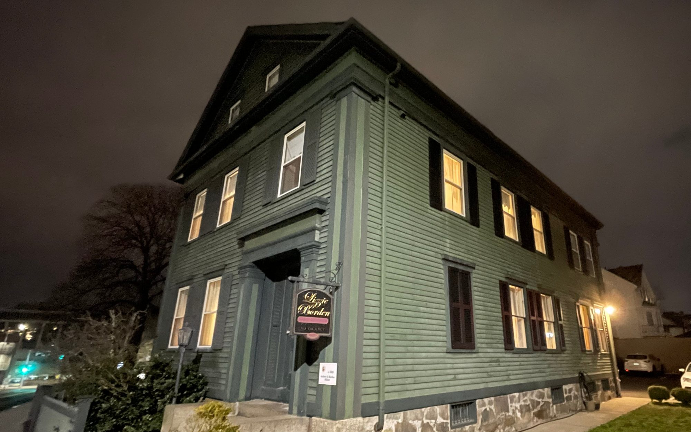
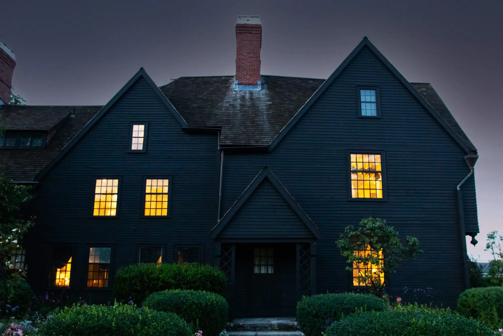

Peaceful Imagery

👻 The Conjuring House – Where Darkness Lingers Deep in the quiet woods of Harrisville, Rhode Island, stands a farmhouse older than America itself. Built in 1736, its walls whisper secrets of centuries past, but not all the voices are of the living. By day, the home looks like any other rural New England farmhouse—but when night falls, shadows twist, floors creak with unseen footsteps, and icy drafts carry the scent of something long dead. The Perron family once lived here, tormented by spirits that turned their dreams into nightmares. They told of doors slamming on their own, whispers echoing through empty rooms, and the ghastly figure of Bathsheba Sherman, a woman accused of witchcraft, glaring at them from the dark. Paranormal investigators Ed and Lorraine Warren braved its halls, documenting the terrors that later inspired The Conjuring film. But the movie was only a glimpse—what lurks in this house cannot be fully captured on screen. Visitors today speak of voices calling their names, unseen hands tugging at their clothes, and eyes watching from the shadows. Step inside, if you dare. The Conjuring House does not welcome guests—it keeps them.

Annabelle – Evil in Disguise Innocence is a mask, and Annabelle wears it well. With her stitched smile and button eyes, she appears as nothing more than a harmless Raggedy Ann doll. But behind the seams lurks a darkness that does not belong to this world. Her story begins in the 1970s, when two young women welcomed her into their home. At first, it was small things—objects misplaced, faint rustling in the night. Then came the notes written on parchment no one owned, and the scratches carved into human flesh. When a friend mocked her, Annabelle’s wrath left him bloodied and shaken. Paranormal investigators Ed and Lorraine Warren intervened, declaring the doll not haunted by a child at all, but used as a vessel by a demonic entity. They sealed her inside a glass case, marked with the chilling warning: “Positively Do Not Open.” Yet even behind the glass, Annabelle whispers. Visitors who taunted her met with accidents, misfortune, even death. She does not need freedom to feed—she only needs attention. Annabelle waits. Watching. Smiling. Hoping someone, someday, will dare to open the case.

Lizzie Borden: The Axe That Never Rested In Fall River, Massachusetts, there stands a house where the walls have soaked in screams and the shadows still remember the blood. This is the home of Lizzie Borden, the woman forever linked to one of the most brutal crimes in American history. The Murders of 1892 On the morning of August 4, 1892, the Borden household was shattered. Lizzie’s stepmother, Abby, was discovered upstairs, her skull caved in by a relentless axe. Hours later, her father, Andrew Borden, was found downstairs on the sofa, his face nearly unrecognizable from the strikes that ended his life. The brutality shocked the nation. Whispers spread quickly—could Lizzie, the quiet church-going daughter, have been capable of such a thing? She was arrested, tried, and then acquitted, walking free as the world watched. But though the law cleared her name, the shadows of suspicion never left her. The House of Echoes The Borden home still stands today, preserved in eerie silence. What was once an ordinary family residence has become a place where time refuses to move on. Visitors swear the house is alive with spirits, restless and unwilling to let go of their violent end. Footsteps echo in empty hallways. Cold spots linger on the staircase where Abby was found. The faint sound of weeping drifts through locked rooms. Some even claim to see Lizzie herself, wandering in silence, forever tied to the house that made her infamous. The Rhyme That Haunts Generations The name Lizzie Borden will forever be remembered in a chilling children’s rhyme: "Lizzie Borden took an axe, And gave her mother forty whacks. When she saw what she had done, She gave her father forty-one." The truth is darker—the numbers were wrong, the rhyme exaggerated. But the horror it captured lived on, becoming part of America’s haunted folklore. Why Lizzie Still Haunts Us Some say Lizzie killed for freedom. Others believe she was innocent, framed by circumstance. But the spirits of the Borden house tell no lies—they linger, restless, as though still crying for justice. Step inside her world and you may feel it too: the heaviness in the air, the stare of unseen eyes, and the echo of the axe that has never truly been put to rest. ⚰️ Enter if you dare. For once you step into Lizzie Borden’s story, you may find the shadows follow you home.

Lizzie Borden Bed & Breakfast What was once the site of America’s most infamous axe murders now invites guests to stay the night. The Lizzie Borden Bed & Breakfast in Fall River, Massachusetts, offers more than lodging—it offers a brush with the paranormal. Visitors report footsteps in empty halls, shadowy figures near the rooms where the murders occurred, and whispers in the dead of night. For those who dare, every creak of the floorboards is a chilling reminder that some guests never checked out… How to Make a Reservation: To reserve your night in the Borden home, visit the official Lizzie Borden House website or call their reservation desk directly. Bookings fill quickly—especially for the rooms where the murders took place—so plan ahead if you wish to experience the haunt for yourself.
Lizzie Borden House Reservation 
The House of the Seven Gables in Salem, Massachusetts, looms like a shadow from another century. Built in 1668, its dark wooden walls and sharply pointed gables seem to whisper the secrets of the families who once lived – and died – within. Legend says the very timbers are cursed, a punishment carried down through generations for greed, betrayal, and bloodshed. Visitors often speak of an unsettling chill as they step inside, as though unseen eyes are watching from the crooked staircases and narrow hallways. Some claim to hear phantom footsteps in the attic, or the faint echo of voices carried through the hidden passageways that snake through the mansion. The creak of the old floorboards can feel like more than age – as if the house itself is alive, groaning under the weight of centuries of sorrow. Nathaniel Hawthorne’s dark novel, inspired by this very house, tells of a family cursed by the sins of the past. But many who enter believe the line between story and truth has blurred. Shadows flicker in empty rooms, portraits seem to stare too intently, and the still night air around the mansion often feels heavy – as though it is holding its breath. Standing at the edge of Salem Harbor, the House of the Seven Gables is more than a relic of history. It is a place where the past refuses to rest, and where the veil between the living and the dead is said to be dangerously thin.